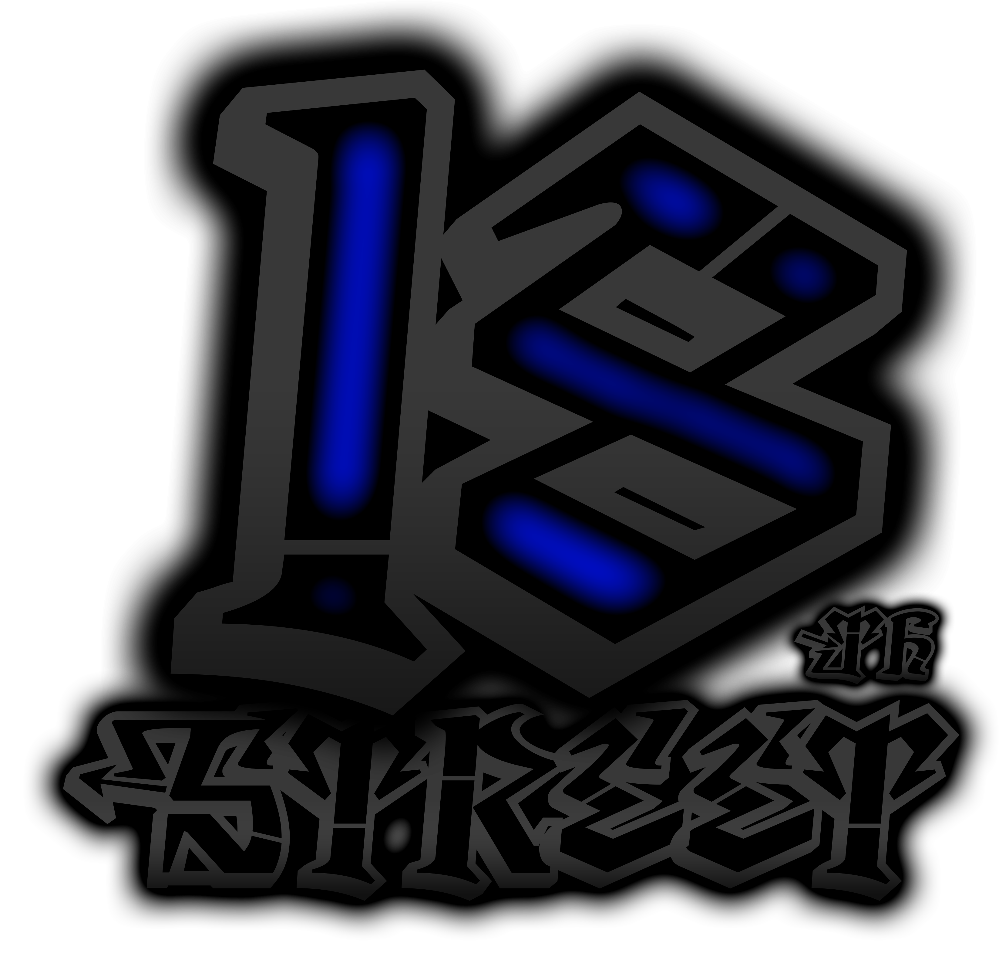

| BLOOD IN |
Um Familienmitglied der 18TH Street zu werden, muss Interesse gezeigt werden.
Wir akzeptieren keine fremden Personen und schriftliche Bewerbungen.
Das zukünftige Familienmitglied muss im Barrio vorstellig werden. Er/Sie spricht mit dem OG, beschreibt seine/ihre Person,
muss sich erklären wie er/sie auf die 18th Street kam und was er/sie über die 18TH Street, weiß. Danach erfolgt eine Familieninterne Abstimmung zur einwöchigen Anwärterzeit.
| BLOOD OUT |
Solltest du der Familie schaden, dich nicht an die Gesetze der Familie halten oder mit sonstigen dinge der 18th Street gefährden können, darfst du dich auf ein Blutiges Ende gefasst machen.
Die Los Santos Vagos sind nicht nur eine Familie, sie ist auch eine Lebensart.
Das heißt, wenn du die Familie verlässt, bist du ein Verräter. Demjenigen wird alles entnommen, was er zu diesem Zeitpunkt dabeihat und wird ans Tor gestellt im Barrio.
Schließlich bekommt er eine Kugel vom OG.